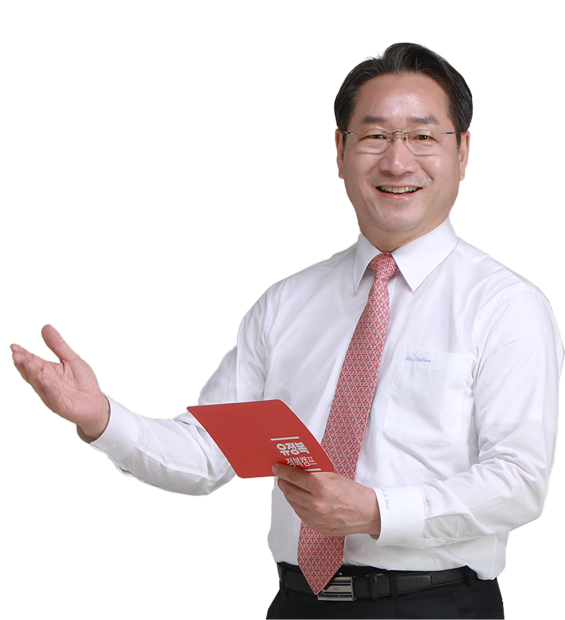
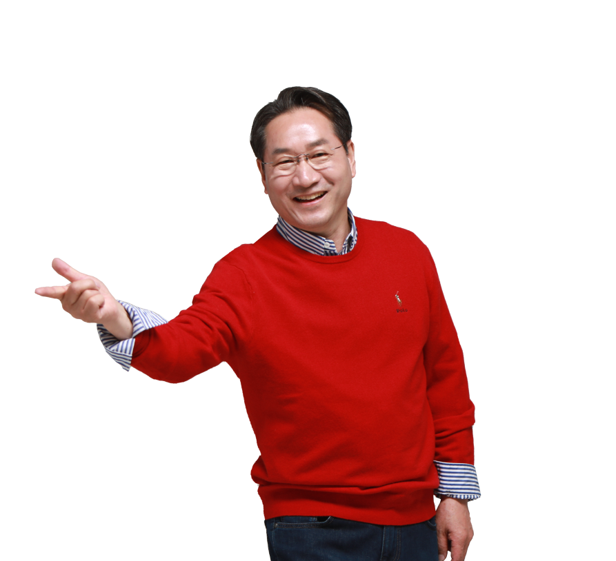
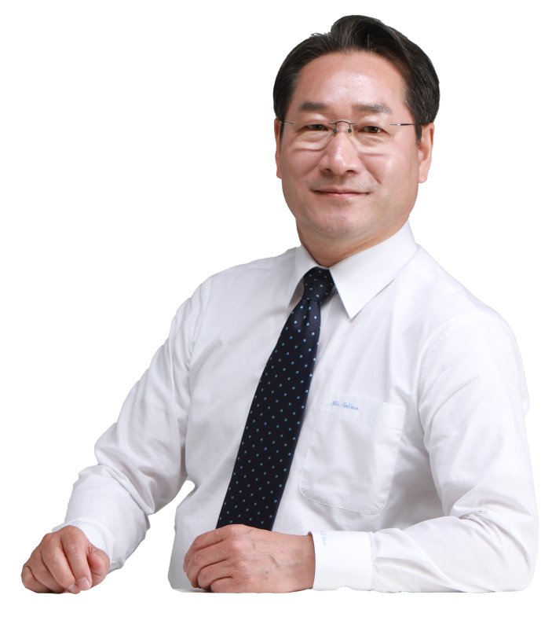

인천의 미래, 유정복과 함께
시장은 정복시민은 행복인천은 축복



지역균형발전 프로젝트
동서/남북으로 인천을 단절시킨 경인전철·경인고속도로·인천대로 지하화를 통해 하나로 연결
인천에서 전국 어디로나 사통팔달, 입체 교통망 구축인천발 KTX 조기 개통, 수도권광역철도 GTX-B, D, E, 인천도시철도 3호선을 통한 인천 내 대순환철도 추진
도시재생사업 등 원도심 활성화를 위한 획기적 정책추진 주차장·편의시설·복지시설
뉴홍콩시티 건설 (영종·강화중심,송도·청라연계)
인천의 근대화를 연 인천내항 주변을 원도심의 미래로 재탄생, 인천내항 하버시티 건설
바다를 활용한 복합공간 조성송도 워터프런트, 경인아라뱃길 스포츠 복합단지 등

계층 균형발전 프로젝트
자영업자·소상공인·중소기업에 대한 과감한 지원 확대공제조합설립, 경영지원센터설립, 이음카드 획기적 운영
사회적 약자에 대한 감동정책 실현장애인 이동권 보장, 다문화·한부모가정, 탈북자, 보훈가족 복지실현, 시민안심제도 확대 시행
상생·화합하는 사회조성간병인, 경비원, 자원봉사자 처우개선 강화
대한민국 지킴이 헌신봉사 예우확대소방공무원, 경찰, 군인 및 사회봉사단체 등
농어민정책연안여객선 완전공영체, 옹진·강화지역 도시가스 공급확대

세대간 상생발전 프로젝트
여성
경력보유 여성의 재취업 강화, 맞춤형 취업지원확대, 취업지원금지원/여성이 안전한 안심드림 인천
경력보유 여성의 재취업 강화, 맞춤형 취업지원확대, 취업지원금지원/여성이 안전한 안심드림 인천
영유아
임신부 인천愛 100원 택시 도입, 출산 축하지원금 1000만원 인상지원, 부모 급여 도입, 산모·태아·영유아 건강 돌봄 서비스 확대
임신부 인천愛 100원 택시 도입, 출산 축하지원금 1000만원 인상지원, 부모 급여 도입, 산모·태아·영유아 건강 돌봄 서비스 확대
어린이
어린이 생존수영 교육, 맞벌이자녀 야간 안심 케어 아이 돌봄 서비스 강화
어린이 생존수영 교육, 맞벌이자녀 야간 안심 케어 아이 돌봄 서비스 강화
청소년
인천소재 UN국제기구와 연계 프로그램 설치, 운영, 취약계층 청소년 '희망 사다리' 사업 전개
인천소재 UN국제기구와 연계 프로그램 설치, 운영, 취약계층 청소년 '희망 사다리' 사업 전개
청년
10만 청년 CEO 육성, 청년 해외진출 기지 조성, 인천형 창업벨트 구축, 인천청년공간 '유유기지' 확대, '1석 5조 인천사랑프로젝트 일자리 만들기'
10만 청년 CEO 육성, 청년 해외진출 기지 조성, 인천형 창업벨트 구축, 인천청년공간 '유유기지' 확대, '1석 5조 인천사랑프로젝트 일자리 만들기'
어르신
65세 이상 '어르신 버스 무료화', 영속성 있고 내실 있는 어르신 일자리 확대
65세 이상 '어르신 버스 무료화', 영속성 있고 내실 있는 어르신 일자리 확대
보훈가족
호국보훈의 도시에 걸맞는 유공예우 시책 마련, 수당 확대
호국보훈의 도시에 걸맞는 유공예우 시책 마련, 수당 확대


시민 여러분,
인천을 초일류도시로 만들겠다는 제 비전은단단하고 견고합니다.인천을 인천답게, 300만 시민의 위상을 세계위로드높이겠습니다.
오직 인천만 보며, 오직 시민만 생각하며담대히 나아가겠습니다.잃어버린 4년을 되찾고, 지방정권 창출의위업을 반드시 이루겠습니다.
윤석열 정부를 완성시키고,성공의 주춧돌이 되겠습니다. 중앙과 긴밀히 소통해, 인천 골목 구석구석행복이 닿게 하겠습니다.
"세계 초일류도시, 인천"
유정복이 말하면 현실이 됩니다.
인천을 초일류도시로 만들겠다는 제 비전은단단하고 견고합니다.인천을 인천답게, 300만 시민의 위상을 세계위로드높이겠습니다.
오직 인천만 보며, 오직 시민만 생각하며담대히 나아가겠습니다.잃어버린 4년을 되찾고, 지방정권 창출의위업을 반드시 이루겠습니다.
윤석열 정부를 완성시키고,성공의 주춧돌이 되겠습니다. 중앙과 긴밀히 소통해, 인천 골목 구석구석행복이 닿게 하겠습니다.
"세계 초일류도시, 인천"
유정복이 말하면 현실이 됩니다.

유정복 후원회
입금 시 성명, 연락처를 상기 연락처로 꼭 문자남겨주시기 바랍니다.
연간 500만원까지 후원이 가능하며 연말정산시 10만원까지 세액공제, 10만원 초과분은 소득공제가 가능합니다.
단, 법인은 후원이 불가능하며 개인 명의 후원만 가능합니다.
연간 500만원까지 후원이 가능하며 연말정산시 10만원까지 세액공제, 10만원 초과분은 소득공제가 가능합니다.
단, 법인은 후원이 불가능하며 개인 명의 후원만 가능합니다.